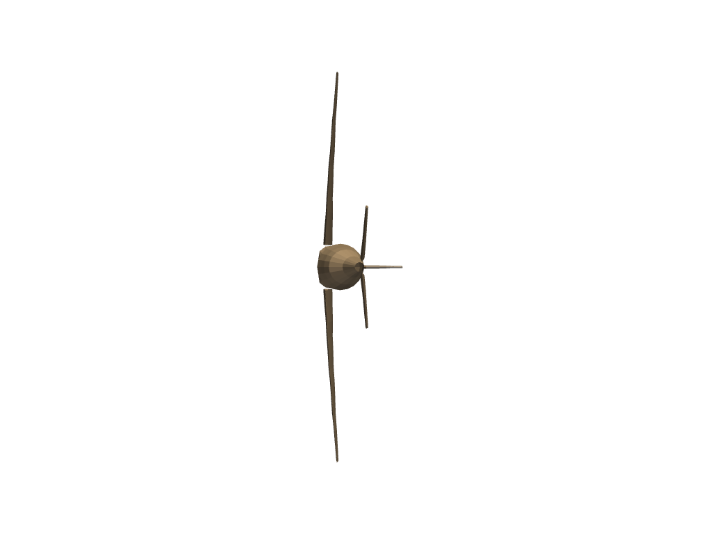

view_zx#
- Renderer.view_zx(negative=False)[source]#
View the ZX plane.
- Parameters
- negativebool,
optional View from the opposite direction.
- negativebool,
Examples
View the ZX plane of a built-in mesh example.
>>> from pyvista import examples >>> import pyvista as pv >>> airplane = examples.load_airplane() >>> pl = pv.Plotter() >>> _ = pl.add_mesh(airplane) >>> pl.view_zx() >>> pl.show()
